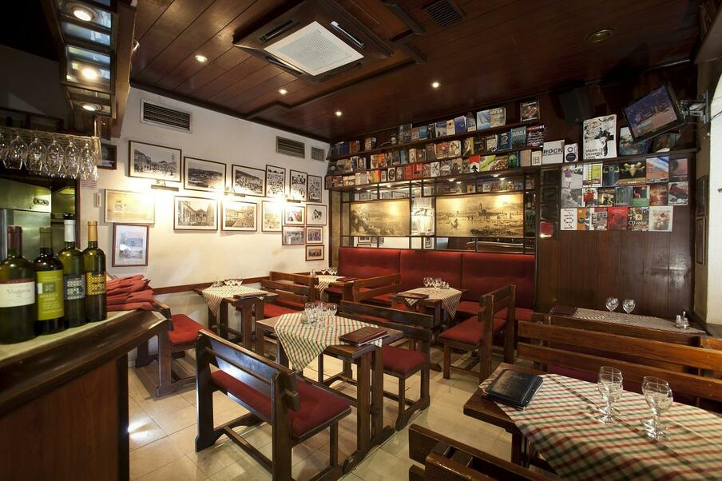

Konoba Ribar
U Konobi Ribar ćete pronaći isključivo jela od svježih lokalnih i sezonskih namirnica. Velika pažnja je posvećena meniju na kojem će se nalaziti pretežito stara dalmatinska i starohrvatska jela poput Pivca ispod peke s purom i kiselim kupusom, Kotleta od crne svinje, drugih lokalnih recepata i probranih specijaliteta s grila. Na jelovniku će se pronaći ponešto za svakoga pa će restoran biti idealan za obiteljska okupljanja, romantične izlaske parova ili poslovne marende po pristupačnim cijenama. Ono što sa sigurnošću možemo reći je da ovo nije još jedna uobičajena priča koju smo navikli gledati u lokalnoj gastronomiji, već da se radi o objektu koji će vas zasigurno oduševiti maštovitošću i modernim pristupom dalmatinskoj kuhinji.
Ova lokacija u prirodi biti će idealno mjesto za održavanje svih dugo odgađanih događanja poput pričesti, krizmi, tretamenti prije vjenčanja ili dnevna vjenčanja, krštenja i drugih zabava. Terasa restorana koja u proljetnim i ljetnim danima dobije posebnu draž može ugostiti do 120 gostiju, dok je unutarnji dio idealan za 60 osoba.